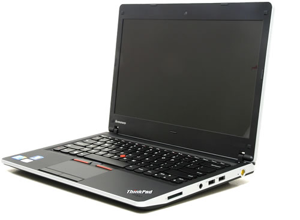
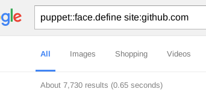

Extending Puppet
within reason - and beyond
Felix Frank
CfgMgmtCamp.eu Gent 2017
Felix - trying to automate all the things since 2004
- ask me about Puppet
- ask me about Ansible
- ask me about mgmt (soon)
- ...or ask my employer if I can help with your project
In my younger days, I'd play with my computers, read a lot, and write a little code.
Another thing I enjoyed:
https://www.toysperiod.com/images/lego-parts.jpg
http://brickset.com/sets/theme-Space/subtheme-Spyrius

http://www.fbtb.net/2014/07/25/sdcc-lego-smaugh-statue-details/
http://www.spydergrrl.com/2015/12/homemade-lego-advent-calendar-2015-day_9.html
https://www.lego.com/en-us/mindstorms/about-ev3
A more compact hobby
http://www.techspot.com/review/254-lenovo-thinkpad-edge/
FOSS: be creative, enrich your life/career, and others
also, productively exercise your privilege
Puppet and its Ruby code base are not unlike LEGO
- a number of differently styled elements
- parts fit together more or less seamlessly
- make new constructs from existing atoms
- become part of a large international community
Puppet is successful because of its powerful core and rich extension points
There is a number of ways to extend Puppet.
Let's talk about each in turn.
http://cuteotters.com/wordpress/?m=200607
Except that would be super boring
Let's answer a few questions instead: How can you allow Puppet to...
- install and manage your new FOSS tool
- use map/reduce algorithms to compute config settings
- bring your cloud infrastructure under version control
- show you what is being managed
- make you a sandwich
- interface with other tooling
- do really weird and/or amazing things
I - Teaching Puppet to handle a new kind of service
It should work kind of like this
class { "zooraxis":
port => 9791,
user => "www-data",
queues => 27,
}
The common Puppet module
Add helpful classes and defines for common use.
Basically a library for Puppet DSL code
Arguably not an actual Puppet extension.
http://www.notable-quotes.com/a/arrogance_quotes.html
Regardless, these are the backbone of the module ecosystem and integral part of Puppet's success.
By the way
The majority of the
~100 modules maintained by Vox Pupuli
are this kind of module.
Modules are also the way to ship any kind of extension to the user.
How to use map/reduce or other complex algorithms with Puppet?
Puppet functions
A powerful way to run arbitrary Ruby code from the catalog builder.
With Puppet 4, you can also write functions in Puppet DSL.
This is cool for teams with insular or missing Ruby knowledge.
Ruby functions are still worthwhile.
- They can take lambda arguments.
You win this session if you can come up with a sensible use for this before its end. - They can invoke arbitrary Ruby or REST APIs.
In summary, Puppet functions have two uses.
Make your code more DRY and readable.
Call out to external software.
The cool community example
query_resources and friends from dalen-puppetdbquery
How to provision and manage your cloud infrastructure with Puppet
Because Terraform can be brutally literal
Custom Puppet Types and Providers
by example of the amazing AWS module by Puppet's own Gareth Rushgrove
Introducing handy new types for `aws` resources.
ec2_instance { 'keats':
ensure => present,
region => 'us-west-1',
image_id => 'ami-ef560a81',
instance_type => 't1.micro',
}
supports EC2 instances, VPC, Route52, RDS etc.
This is a good fit for Puppet resources because the AWS API implements CR(U)D.
- check whether an instance exists
- create or destroy it as desired
- if possible, apply changes to managed properties
With custom types/providers, Puppet can take advantage of its optimizations like prefetching etc.
How can I find out what config files are managed?
Any profiles missing?
What can I touch manually?
Puppet Faces
a very convenient way to implement new Puppet subcommands
http://nathanst-mo.tumblr.com/post/115601535211/replacement-puppet-faces
Community example
The dalen-puppetls module
adding the puppet ls subcommand.
$ puppet module install dalen-puppetls
$ puppet ls /tmp
Notice: Scope(Class[main]): compiling site.pp
Notice: Compiled catalog for fflaptop.local in environment production in 2.39 seconds
this-is-a-file
/home/ffrank/.puppetlabs/etc/puppet/env/production/manifests/site.pp:4
ffrank:www-data
$ puppet ls /tmp --catalog_terminus=json
The puppet ls subcommand will
- retrieve a catalog if necessary
- make a list of file resources
- filter by path prefix
Simple and elegant, so let's talk code
Why the face?
http://www.spendcrazy.net/horse-mask
Easy subcommand: short boilerplate code
require 'puppet/application/face_base'
class Puppet::Application::Ls < Puppet::Application::FaceBase
end
...in principle. In this case:
require 'puppet/application/face_base'
class Puppet::Application::Ls < Puppet::Application::FaceBase
def app_defaults
super.merge({
:catalog_terminus => :rest,
:catalog_cache_terminus => :json,
})
end
def setup
if Puppet[:catalog_cache_terminus]
Puppet::Resource::Catalog.indirection.cache_class =
Puppet[:catalog_cache_terminus]
end
super
end
end
The face itself has a number of elements:
- meta information (author etc.)
- a SemVer compliant API version
- inline documentation
- a number of verbs that can form sub-subcommands
- all of this written in a Ruby DSL
- it can make use of other faces
Basic structure and metadata
require 'puppet/face'
Puppet::Face.define(:ls, '1.0.1') do
license "Apache-2.0"
copyright "Erik Dalén", 2016
author "Erik Dalén <__redacted__@gmail.com>"
summary "List files managed by Puppet"
action :list do
...
end
end
Action structure
action :list do
default
summary "List files and directories"
description <<-'EOT'
Reads and lists file resources from the catalog.
The source of the catalog can be managed with the `--catalog_terminus` and
the `--catalog_cache_terminus` option.
EOT
notes # ...
returns # ...
arguments "[<path>]"
option "--recursive", "-r" do
summary 'Recursively list files and directories'
end
when_invoked do |*args|
...
nil
end
end
Interfacing with other faces
(get it?)
when_invoked do |*args|
options = args.pop
if args.empty?
path = Dir.pwd
else
path = File.expand_path args.pop
end
path = path[0..-2] if path.end_with? File::SEPARATOR
catalog = Puppet::Face[:catalog, "0.0"].find # <-------------------
catalog.filter { ... }.resources.sort { |x,y| ... }.each do |file|
...
end
nil
end
(actually this is another lie)
So what's so cool about Faces?
Subcommands are good UX in this age of git.
DSL code is maintainable and comoposable.
See what other cool Faces are out there!
i.e. search for:
puppet::face.define site:github.com
e.g. "Infrastructure" by Ben Ford
So how can Puppet make me a sandwich?
Well, it cannot.
But once you build an IoT sandwich maker, you can easily build a Face for it!
$ puppet sandwich make --vegan --whole-cornHow can I connect Puppet with other tools?
No cheating this time!
I'd go with a Face for this one.
- you get a CLI to shell out to
- you also get a Ruby API
What you don't just get is a HTTP API.
Example for a Face that links Puppet to another software:
ffrank-mgmtgraph
Come see me tomorrow on the mgmt track :-)
How crazy can I go with these Faces?
Free idea for a tool
- ssh to remote system
- make a GEM_HOME in /tmp and get Puppet
- copy the pre-compiled catalog to remote
- run puppet apply --catalog on remote
Essentially a glorified shell script.
Why make a Face
Because those are available via puppet module install
Summarizing
make types and providers because they make puppet more powerful
make functions for more convenience
but also don't forget to make faces
Before we close:

We are hiring in Berlin!
Questions?